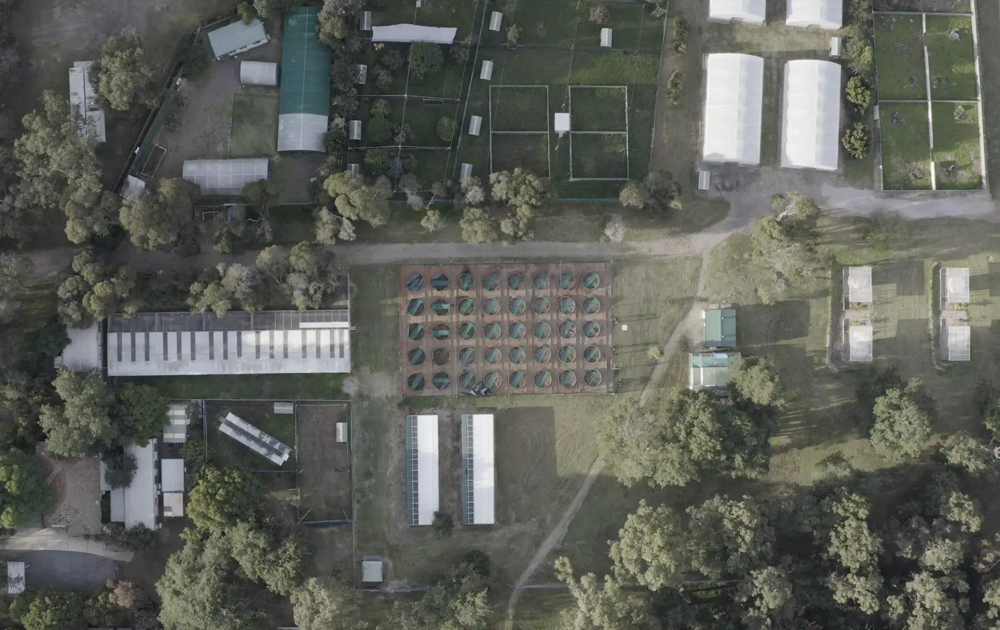

Lizard enclosures
Two sets of large outdoor enclosures in Macquarie University’s Fauna Park.
Explore the enclosures →The Lizard Lab
Our research facilities combine large outdoor enclosures, specialised lizard tubs, indoor animal rooms, CCTV-equipped behaviour spaces, laboratories and a physiological performance room.

Two sets of large outdoor enclosures in Macquarie University’s Fauna Park.
Explore the enclosures →
A field enclosure complex at Xiaman Conservation Station in Sichuan Province.
Visit the China facility →
Large outdoor experimental tubs designed for flexible replicated studies.
See the lizard tubs →
Indoor CCTV-equipped spaces for controlled behaviour and cognition research.
Tour the centre →
Our longest-running dedicated lizard room, with adaptable wheeled shelving.
See the lizard shed →
Office, laboratory and physiological-performance facilities beside the Fauna Park.
Explore the laboratory →